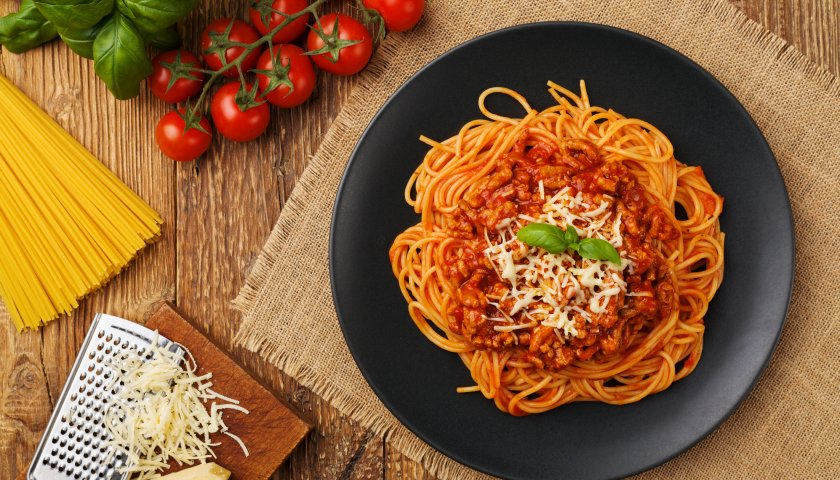

Macarrão

Ingredientes
Molho
- 3 colheres de manteiga
- 1 caixinha de molho de tomate
- 1 tablete de caldo de legumes
Massa
- 1 pacote de espagete
- 1 colher(sopa) de oleo de soja
- 1 colher(café) de sal marinho
Preparo
Molho
-
Enquanto cozinha o macarrão, coloque o molho com a manteiga e o caldo de
legumes em uma panela pequena, e aqueça em fogo brando.
-
Quando o macarrão ficar pronto, misture 2 conchas da água do cozimento
do macarrão reservada, no molho, deixe ferver e apague o fogo.
-
A manteiga e a água do cozimento do macarrão farão que o molho seja
absorvido pela massa, e fique grudadinho na massa.
Massa
- Ferva aproximadamente 5 litros de água com o sal.
-
Quando a água estiver fervendo, coloque o macarrão aos poucos, para não
parar a fervura.
-
Quando acabar de colocar o macarrão na panela, comece a contar o tempo
de cozimento, indicado pelo fabricante na embalagem, geralmente esse
tempo é de 8 a 12 minutos.
- Mexa de em quando, para evitar que os fios de macarrão grudem.
-
Terminado o cozimento, apague o fogo, separe 2 conchas da água do
cozimento do macarrão e reserve.
-
Para 2 porções de macarrão reserve 1 concha da água do cozimento, para o
pacote inteiro (500g), reserve 2 conchas.
-
Coloque um copo de água fria na panela, mexa com a colher de pau e coe o
macarrão, imediatamente, no coador de macarrão.
-
Se o macarrão ficar na água quente, vai continuar cozinhando, e vai
empapar.
- A água fria é usada para parar o cozimento.
-
Nunca lave o macarrão, se lavar o macarrão esfria e perde o sabor.
Montagem
-
Coloque o macarrão cozido e escorrido em uma travessa, coloque o molho
por cima, mexa ligeiramente e sirva, acompanhado de queijo ralado.
- Sirva o macarrão bem quente.